Префектура Киото · Сагано · храм
Храм Дайкаку-дзи в Сагано: пруд императора Сага, икэбана и сутра, которую открывают раз в 60 лет
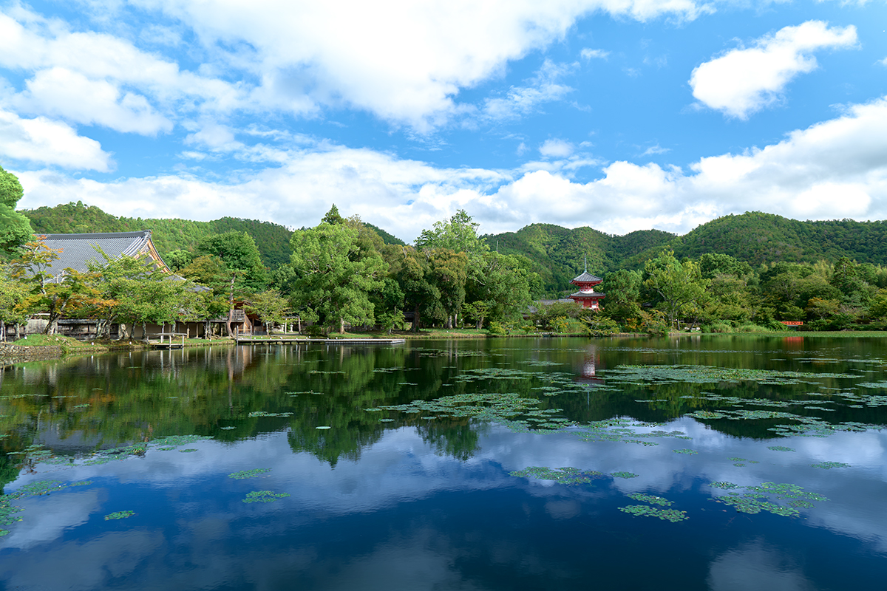
В Сагано, в стороне от шумного моста Тогэцу-кё, стоит храм, выросший из загородной резиденции императора. Вид на пруд и горы с его берега почти не изменился за 1200 лет.
История
Загородный дворец, ставший храмом
Сагано лежит на западной окраине Киото и с древности славится красотой: придворные эпохи Хэйан приезжали сюда охотиться, кататься на лодках, любоваться осенними клёнами и оставляли об этом стихи. От толп у моста Тогэцу-кё нужно отойти через жилые кварталы, и в глубине их открывается тихий храм Дайкаку-дзи. Полное его имя звучит как «Бывший дворец Сага, главный храм Дайкаку-дзи».
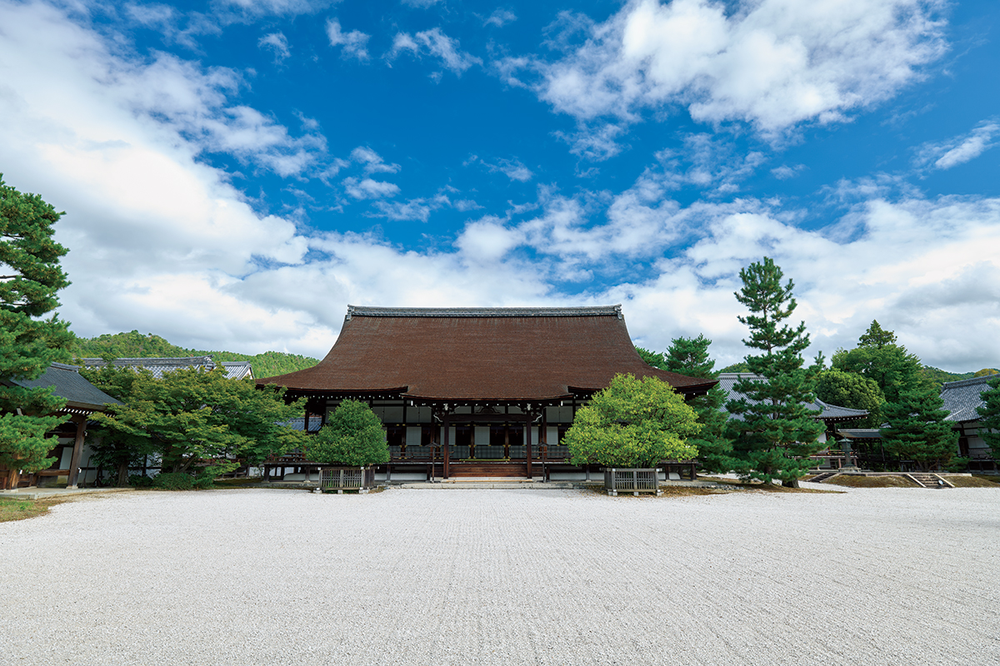
Это главный храм ветви Дайкаку-дзи буддийской школы сингон. Его корни уходят к загородному дворцу, который в начале IX века построил император Сага. Храмом дворец сделал внук императора, принявший монашество, и вплоть до начала эпохи Мэйдзи настоятелями здесь были бывшие императоры и члены императорской семьи. Если считать вместе с дворцовыми временами, истории храма больше 1200 лет.
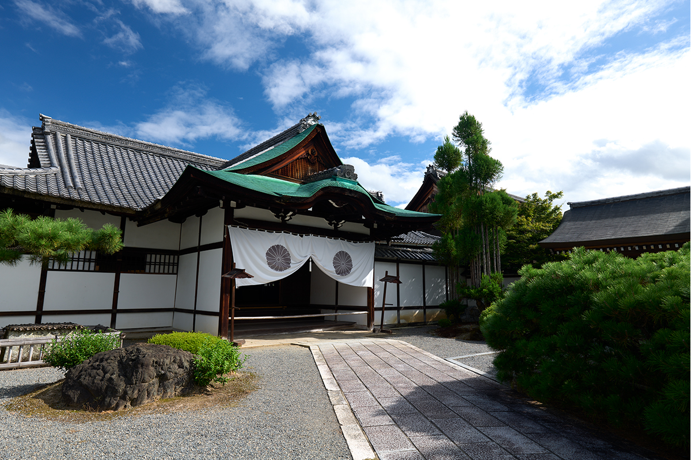
«Император Сага был человеком очень изысканного вкуса. Он пускал по пруду Осава ярко раскрашенные лодки с головой дракона и с птицей на носу и любовался луной, отражённой в воде. Он велел составить сборники китайских стихов „Рёунсю“ и „Бунка сюрэйсю“ и сам писал много стихов»
один из руководителей храма
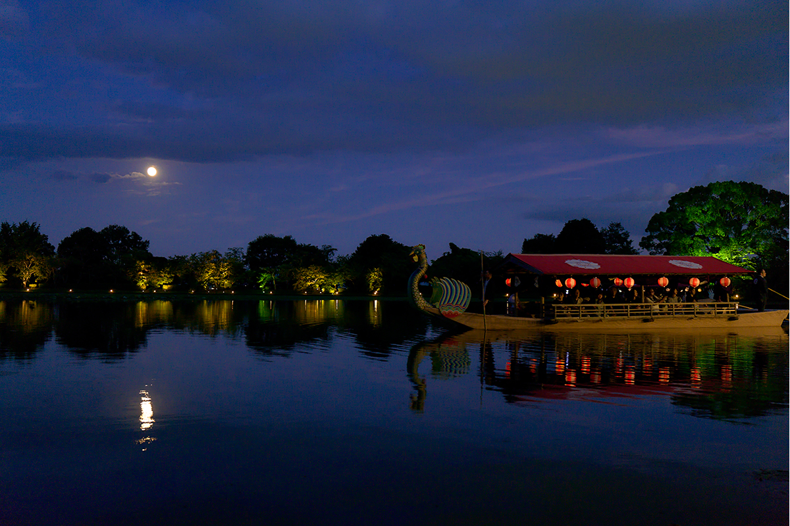
Кукай
Император и монах
Император любил китайскую культуру и искусство, а с храмом его особенно тесно связывает Кукай, которого здесь чтят как основателя школы. Кукай уезжал в Китай с японским посольством на 20 лет, но вернулся через два года. За это самовольство его оставили жить на Кюсю, не пуская в столицу.
Вскоре после восшествия на престол император Сага простил его и позвал в столицу. «Кукай поднёс императору книги и другие вещи, привезённые из Китая. Император очень ими заинтересовался, и с этого началась их дружба», рассказывают в храме.
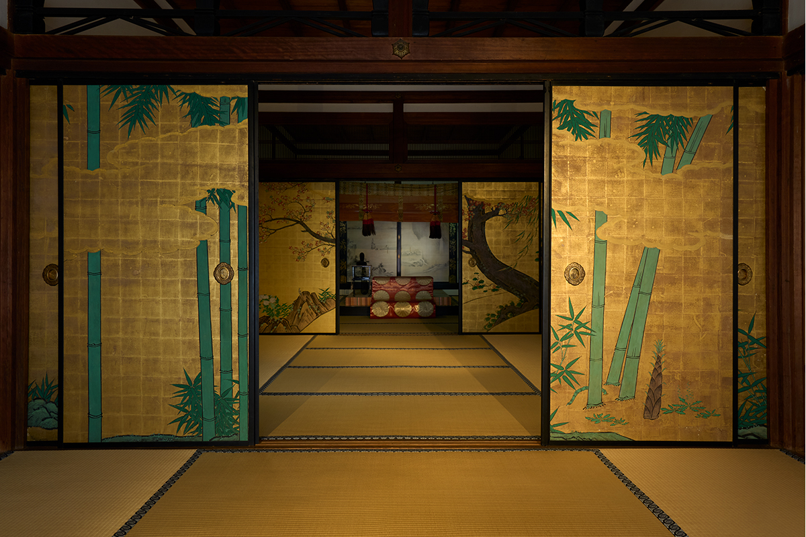
Император Сага взошёл на престол через 15 лет после того, как столицу перенесли в Хэйан-кё, нынешний Киото, и городу ещё многого не хватало. Через Кукая император узнавал о самых передовых для того времени китайских способах управления, строительства и искусства и переносил их в столицу.
Пруд
Осава: озеро из Китая у стен Киото
Пруд Осава при храме называют старейшим в Японии рукотворным садовым прудом. Его устроили, когда император Сага строил загородную резиденцию Сага-ин, будущий дом для себя и императрицы Данрин. Образцом, как считается, послужило китайское озеро Дунтинху. Здесь император устраивал пиры со стихами и музыкой.
В усадьбах знати эпохи Хэйан перед главным зданием почти всегда был пруд, и пруд Осава можно считать их прообразом. Сагано император знал ещё принцем, когда ездил сюда на охоту, и уже тогда построил здесь загородный дом. Отрёкшись от престола, он переселился в Сага-ин вместе с императрицей и прожил здесь последние десять лет жизни.
Его гробница стоит на горе, которую видно с берега пруда, и оттуда тоже открывается прекрасный вид. Пологие горы Асахара и Огура служат саду фоном, внизу лежит полный воды пруд, над ним широкое небо. Этот пейзаж и сегодня напоминает о Сага-ин, который так любил император.
Двор
Дворец Сага и раскол императорского дома
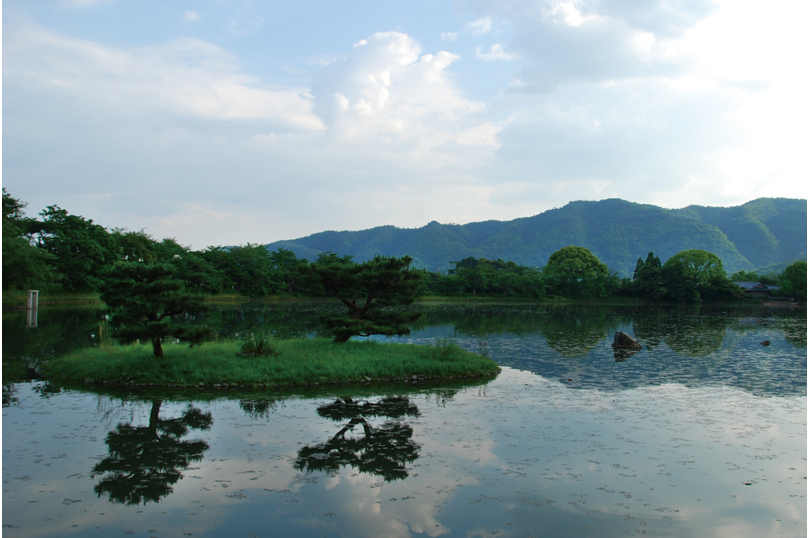
В эпоху Камакура настоятелями Дайкаку-дзи один за другим стали три бывших императора: Го-Сага, Камэяма и Го-Уда. Больше всех для храма сделал Го-Уда, которого чтят как его второго основателя: он привёл монастырь в порядок и выстроил большой комплекс зданий.
Дворцом Сага храм зовут не только из-за резиденции императора Сага: Го-Уда тоже построил здесь дворец и правил отсюда как бывший император.
«Император Го-Сага не назначил наследника, и императорский дом раскололся надвое. Ветвь Го-Уда назвали линией Дайкаку-дзи, потому что он был настоятелем этого храма»
один из руководителей храма
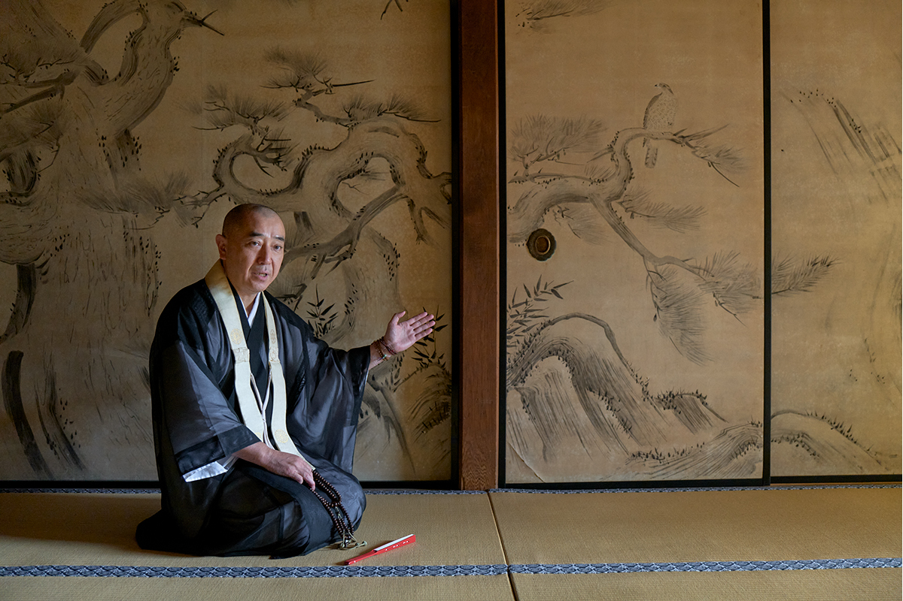
Считается, что и переговоры о воссоединении Северного и Южного дворов прошли в Дайкаку-дзи. Храм оставил след в переломные моменты японской истории, и в этом одна из причин его славы.
Огромный комплекс Го-Уда простоял всего 15 лет: в смуте той эпохи его сожгли войска Такаудзи Асикаги (1305–1358), основателя сёгуната Муромати. Потом храм ещё не раз горел и отстраивался, и большинство нынешних зданий перенесли сюда или построили заново между концом XVI и XVII веком.
Залы
Синдэн, коридор Мурасамэ и зал Годайдо
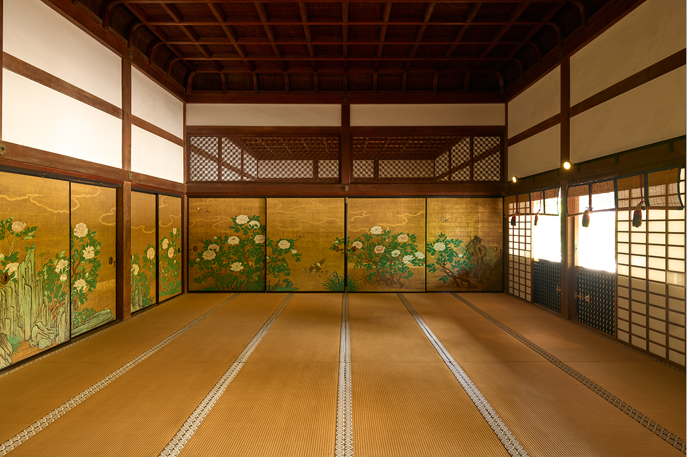
Первым среди храмовых зданий бросается в глаза зал Синдэн, какие бывают только в храмах, где настоятелями служили члены императорской семьи. Это бывший дворец Кадзуко, дочери второго сёгуна Токугава, которая стала супругой императора Го-Мидзуноо (1596–1680), перенесённый сюда в начале эпохи Эдо.
Крыша зала покрыта корой кипариса, окна закрываются откидными решётчатыми ставнями, как в старых дворцах. Перед фасадом, как во дворце, растут померанец справа и слива слева. Внутри раздвижные двери с пионами и красными и белыми сливами (копии) работы Санраку Кано, основателя киотской ветви школы Кано.
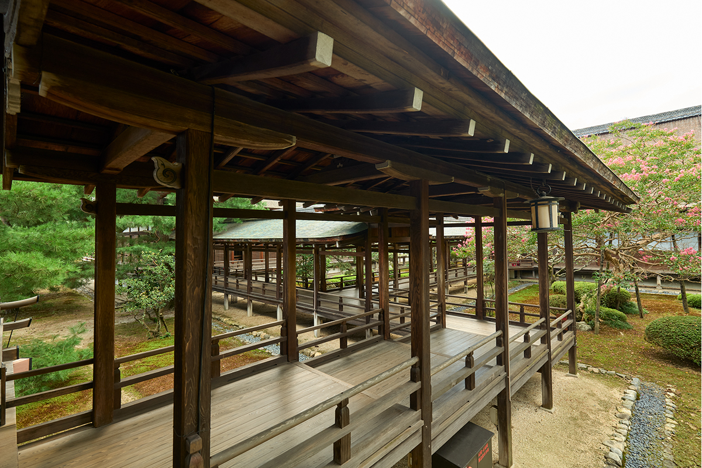
Залы соединены крытыми галереями вроде коридора Мурасамэ, и «соловьиный пол», поскрипывающий под шагами, звучит здесь как-то особенно изящно. Стоит заглянуть в зал Тёкухо-сингёдэн, где хранятся «Сутры сердца», переписанные шестью императорами, в том числе императором Сага, и в соседний зал Синкё-дзэндэн, его также называют Миэйдо.
Синкё-дзэндэн это перенесённый сюда пиршественный зал, построенный для коронации императора Тайсё. Во внутреннем святилище стоят статуи императора Сага и Кукая. С хранилищем сутр зал связан полотнищем пяти цветов: считается, что, если погладить ритуальную ваджру или повернуть молитвенное колесо, получишь благословение сутры.
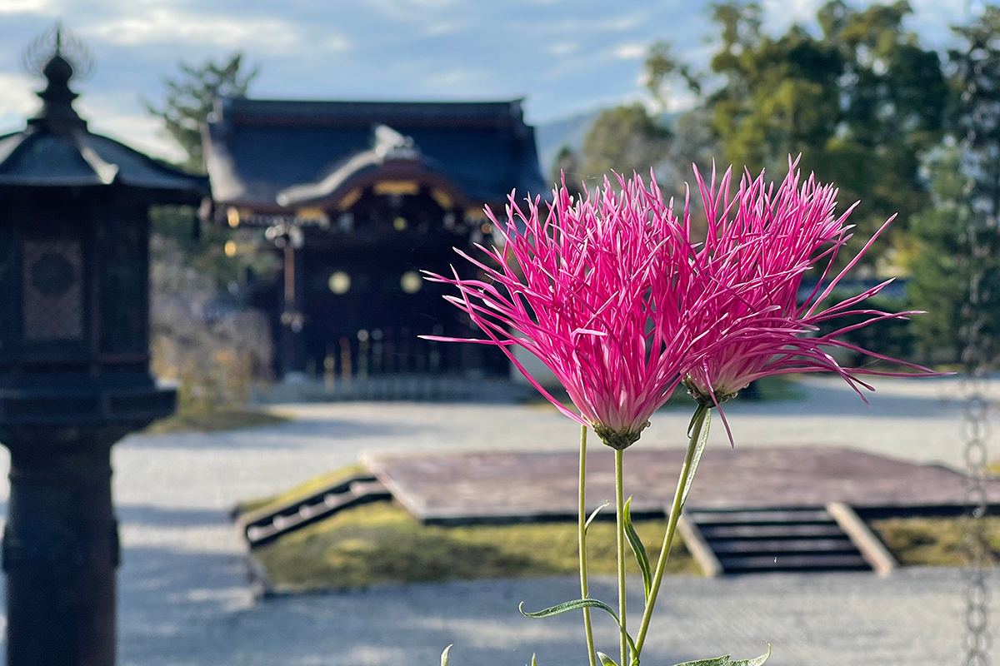
Главный зал храма это Годайдо на берегу пруда Осава. В нём почитают пять царей мудрости, грозных божеств эзотерического буддизма: Фудо, Годзандзэ, Гундари, Дайитоку и Конго-яся. Начало ему положил домашний храм Гокаку-ин, который Кукай построил ещё во времена резиденции Сага-ин.
Дайкаку-дзи к тому же главный центр школы икэбаны Сага-горю. Каждый ноябрь здесь проходит выставка хризантем сага-гику, и двор заполняют старинные сорта с лепестками тонкими, как нити. Каждый куст формируют так, чтобы снизу вверх шло семь, пять и три цветка. В это время и клёны вокруг пруда начинают краснеть, так что ноябрь хорош для визита.
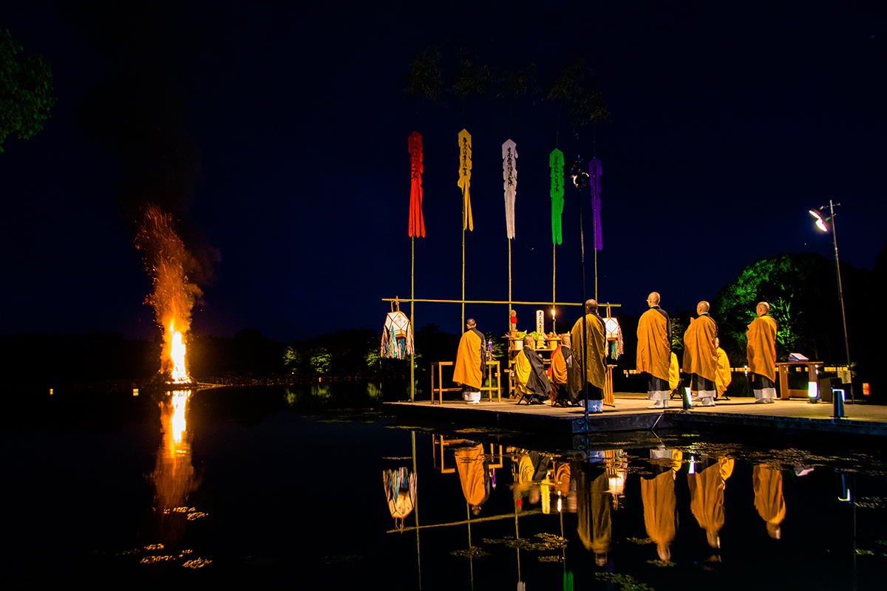
Сутра
Сокровище, которое открывают раз в 60 лет
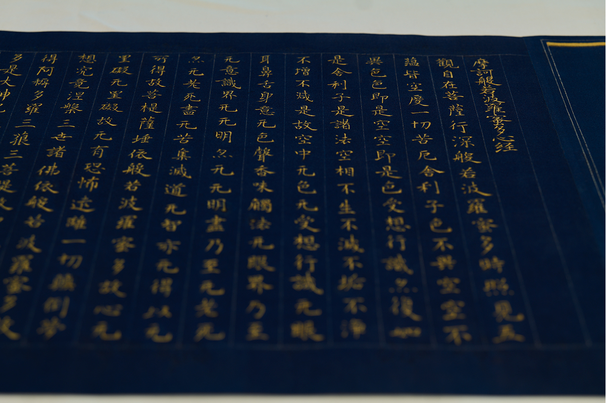
В зале Тёкухо-сингёдэн хранится «Сутра сердца», которую торжественно открывают только раз в 60 лет, в год Земляной Собаки. Следующий раз это случится лишь в 2078 году.
«В 818 году, при императоре Сага, страну постигли голод и болезни. Чтобы унять бедствия, император по совету Кукая переписал „Сутру сердца“»
один из руководителей храма
По преданию, император трижды простирался ниц перед каждым иероглифом и так написал все 276 знаков. Сутра написана золотой краской на узорчатом шёлке, окрашенном индиго в тёмно-синий цвет.
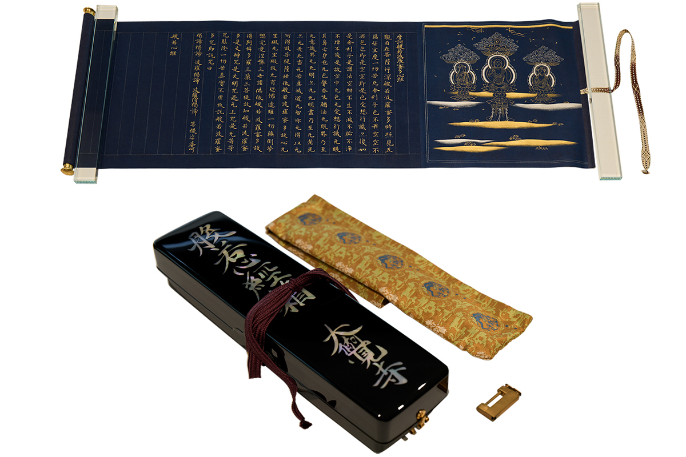
На обороте свитка изображена троица Будды Врачевателя работы императрицы Данрин. Говорят, императоры во время болезни соскребали иероглифы и принимали их как лекарство. А изображение троицы, видимо, окунали в воду, чтобы выпить её: так сильно стёрлись его линии.
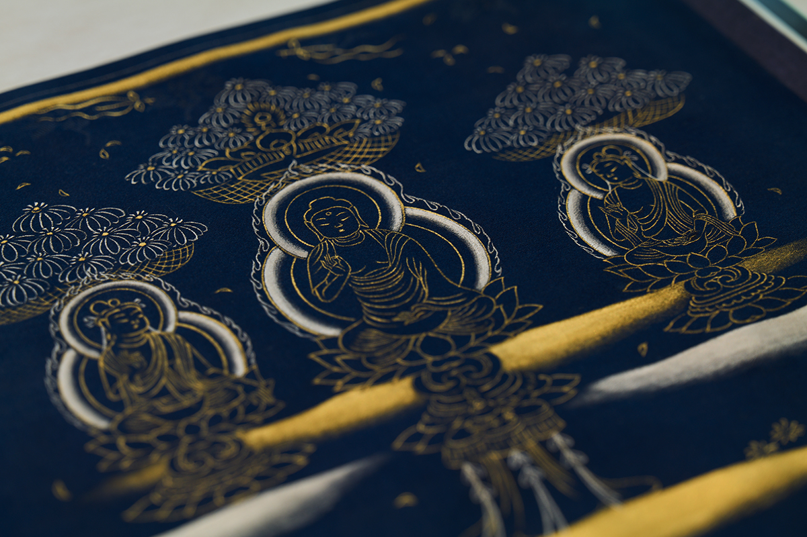
Обычай переписывать «Сутру сердца» в годы народных бедствий по примеру императора Сага перешёл к его потомкам. В хранилище лежат и сутры, переписанные императорами Го-Когоном, Го-Ханадзоно, Го-Нара, Огимати и Кокаку.
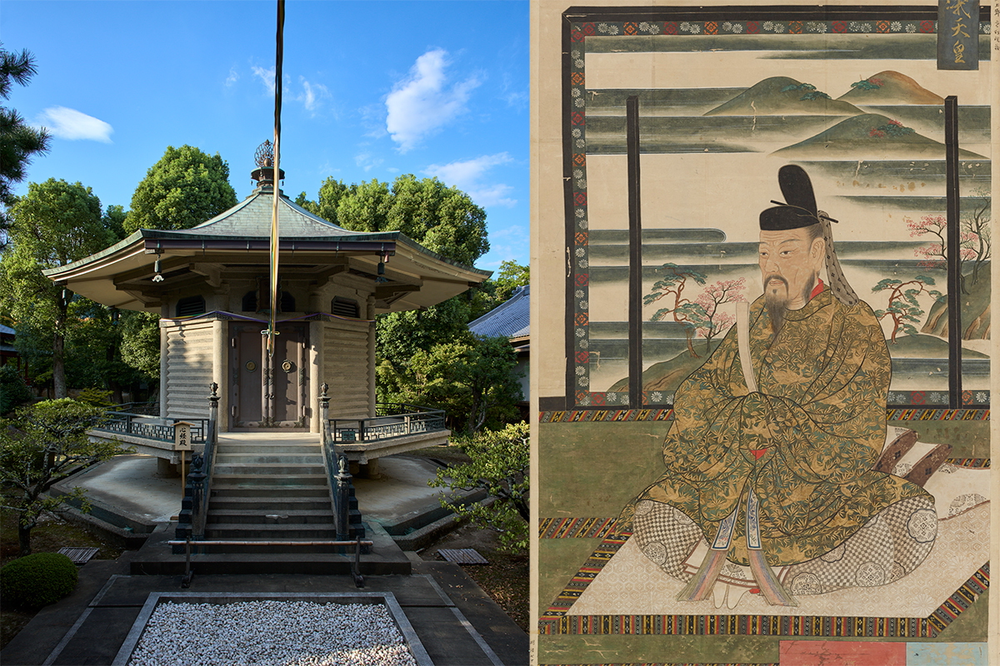
Любопытно, что среди них есть сутра императора Го-Когона (1338–1374) из Северного двора, который враждовал с линией Дайкаку-дзи. «Может быть, и он в глубине души желал мира», говорят в храме.
Со времён императора Сага Дайкаку-дзи известен и как место для переписывания сутр. В зале Годайдо любой может переписать «Сутру сердца» и другие тексты или перерисовать изображение Будды.
Сокровища
Пять царей мудрости и зайцы для юного настоятеля
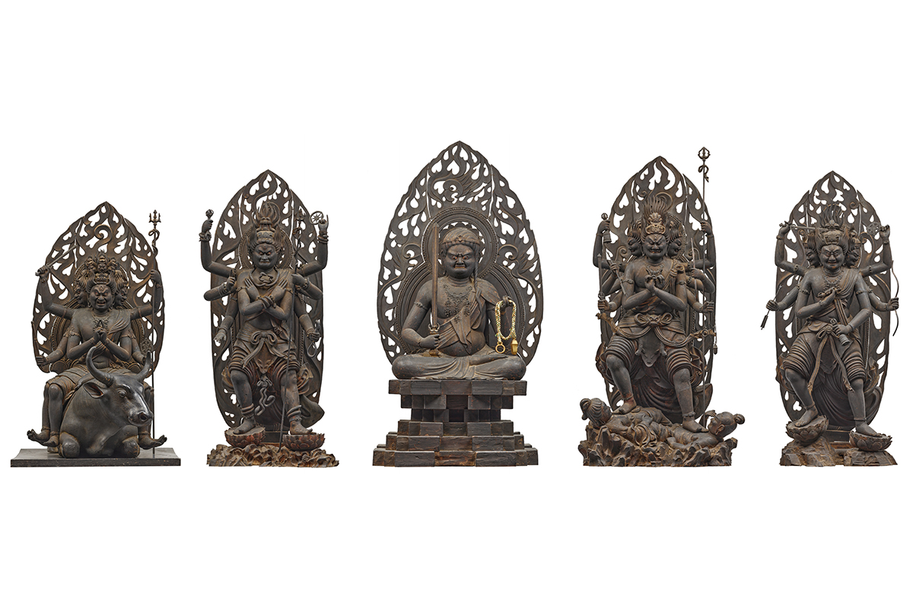
В 2026 году исполнилось 1150 лет с основания храма. Обычно статуи пяти царей мудрости работы Мёэна показывают лишь недолго, на весенних и осенних выставках сокровищ. Статуи, которые, по преданию, Кукай поставил в Гокаку-ин, не сохранились, но и эти, конца эпохи Хэйан, очень ценны. Округлые тела и мягкие лица продолжают стиль Дзётё, главного скульптора эпохи Хэйан.
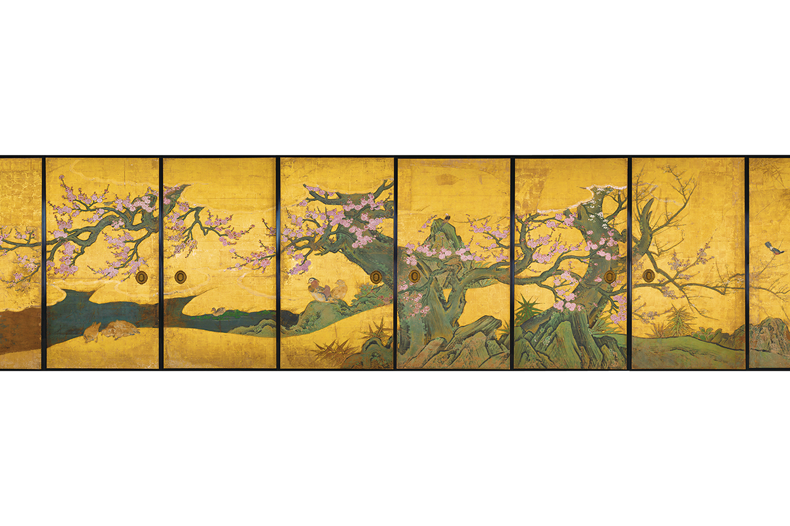
Подлинники росписей Санраку Кано обычно закрыты для публики. В 2025 году их и статуи пяти царей мудрости показывали на юбилейной выставке храма в Токийском национальном музее.
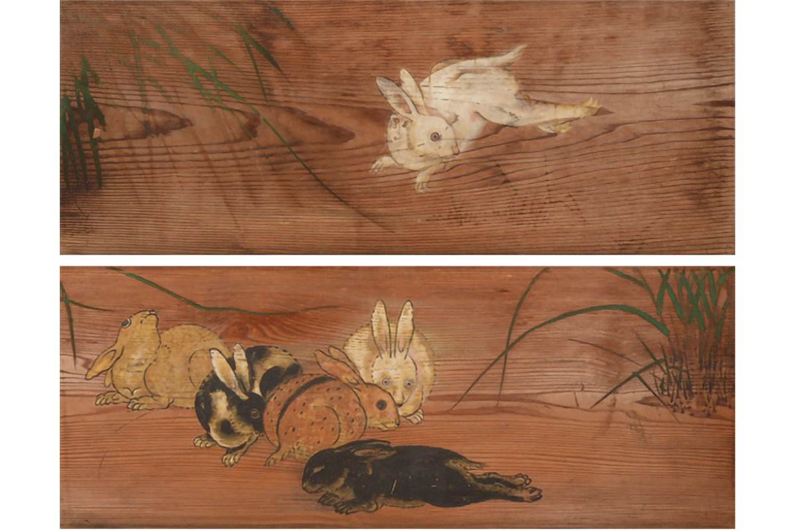
Храм Дайкаку-дзи
- Адрес
- префектура Киото, город Киото, район Укё, Сага-Осава-тё, 4
- Телефон
- +81 75-871-0071
- Часы работы
- 9:00–17:00 (вход до 16:30)
- Выходные
- нет (в дни храмовых церемоний залы могут быть закрыты)
- Цены / Вход
- залы 500 иен, территория у пруда Осава 300 иен
- Как добраться
- от станции Сага-Арасияма линии JR Сагано около 20 минут пешком; от автобусной остановки «Дайкаку-дзи» 1 минута
- Сайт
- daikakuji.or.jp
Фото: Марико Тая.